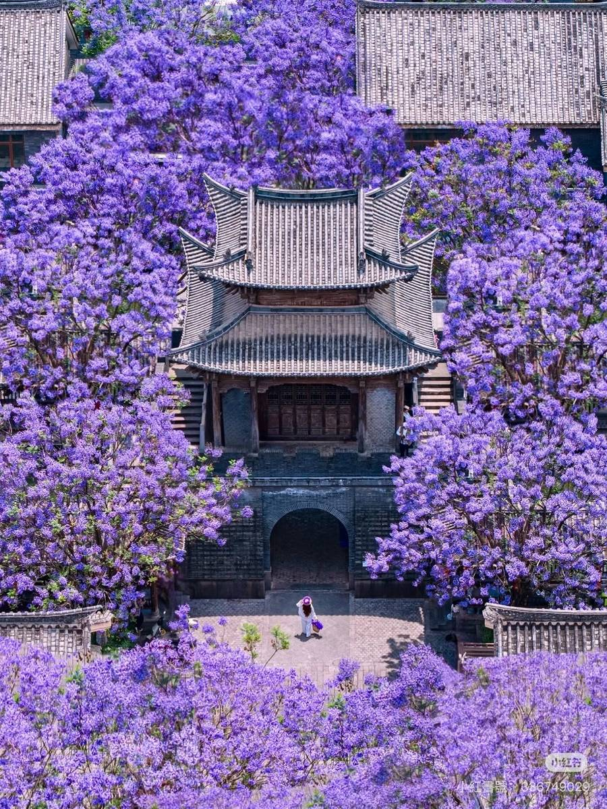
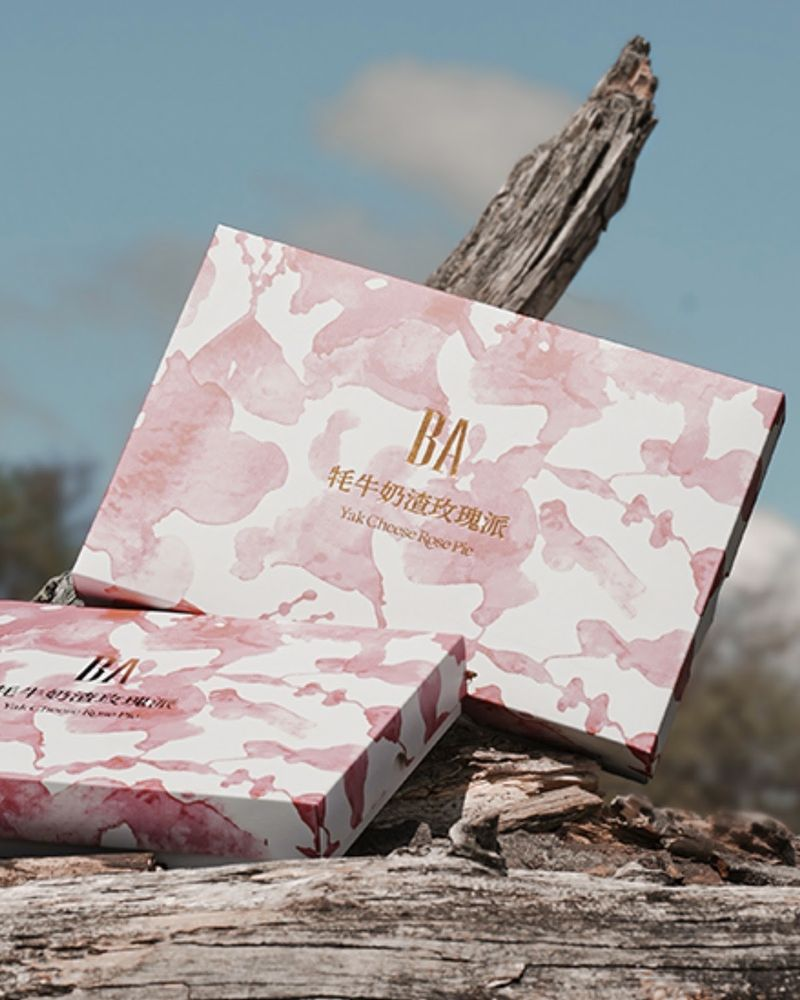
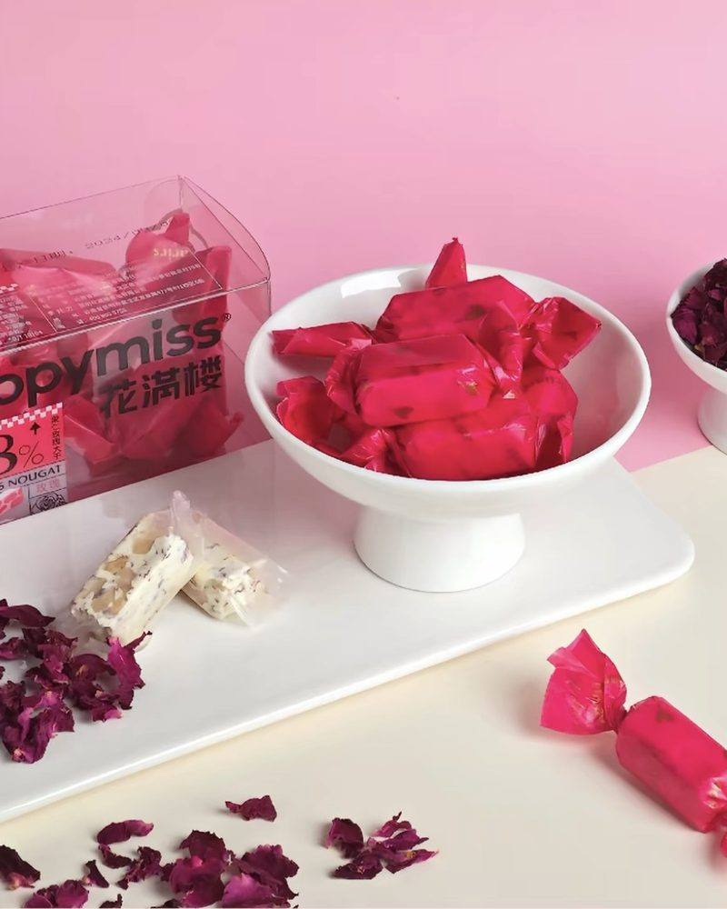
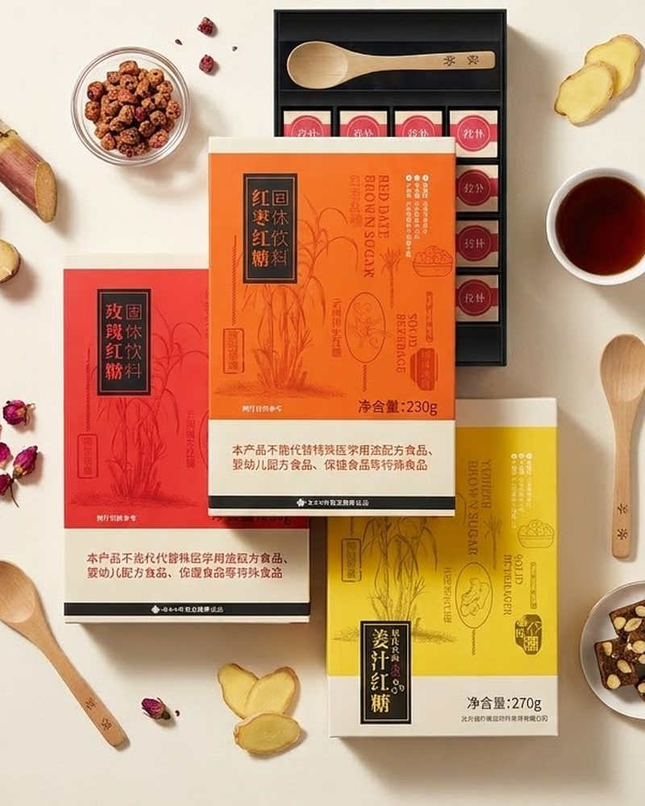
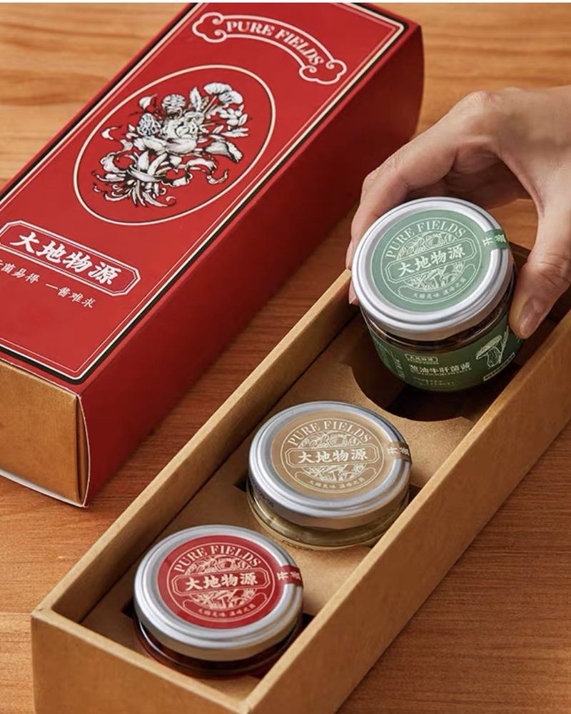
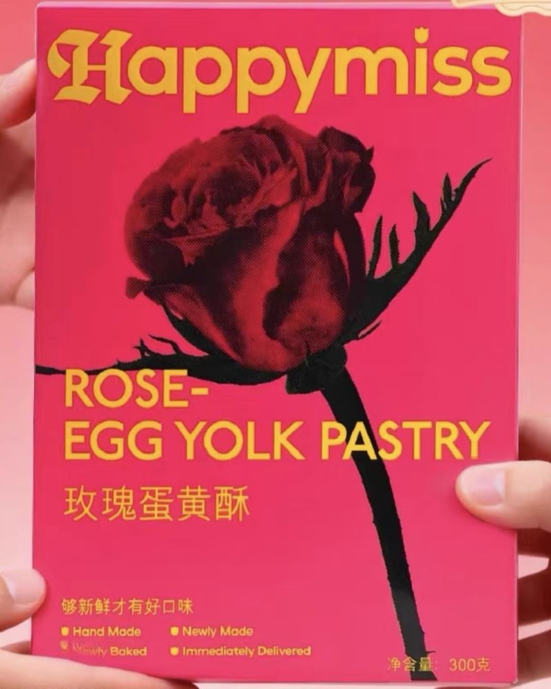
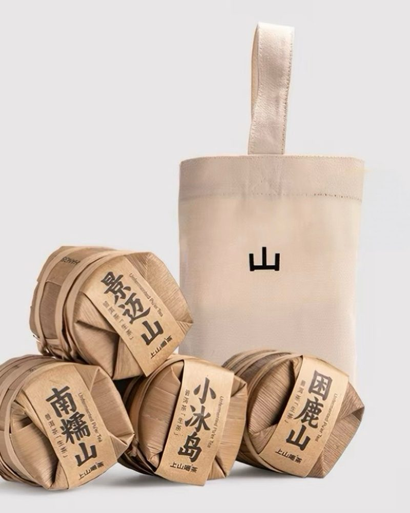

Yunnan · 彩雲之南
雲南
山有多高，茶就有多高。霧有多厚，故事就有多厚。

照片取自網路，若有侵權請告知我們，我們會立即下架。
Five themes · 五個主題
從山到杯 從手到家
茶
Tea
菌
Mushroom
香
Spice
染
Textile
器
Silver
雲南是中國西南最厚的一塊地。海拔從 76 公尺爬到 6740 公尺，氣候從熱帶到寒帶，民族二十六個。茶馬古道從這裡出發，普洱茶在這裡被發酵。我們從中精選每一件能承載這份厚度的物。
當季選物

餅 · PASTRY
氂牛奶玫瑰派
高原的氂牛奶，配上雲南的玫瑰。
NT$ 680
到選購頁 →
甜 · SWEETS
玫瑰花生牛軋糖
花生的香、玫瑰的甜，一盒剛好分給一桌人。
NT$ 250
到選購頁 →
甜 · SWEETS
雲南紅糖三味
冬天的早晨，一匙化在熱水裡。
NT$ 480
到選購頁 →
菌 · MUSHROOM
牛肝菌拌醬禮盒
拌麵、拌飯、炒一盤青菜，年菜桌上的隱藏主角。
NT$ 880
到選購頁 →
餅 · PASTRY
玫瑰蛋黃酥
玫瑰與蛋黃，一口酥皮裡的甜與鹹。
NT$ 580
到選購頁 →
茶 · TEA
四大山頭 mini 七子餅禮袋
四座名山各一餅，一次喝懂普洱的山頭味。
NT$ 1,250
到選購頁 →以上為雲南好物選購頁目前上架的品項。台灣選物滿 NT$ 3,000 免運。到選購頁看完整說明與規格 →
雲南
選物
From the high mountains